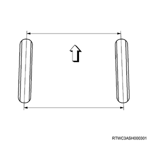

Wheel alignment check (All models)
1. Wheel alignment check
"Front end alignment" covers the angular relationship among the front wheels, front suspension mounting parts and the ground.
Ensure effective steering and good directional stability and maintain adequate front end alignment to prevent abnormal tire wear. The most important elements in the front end alignment are wheel toe-in, wheel camber and axle caster.
Camber
This illustration shows the vehicle viewed from the front.
The camber is facing toward the inside or outside of the front wheel and tilted in up and down directions. If the wheel is tilted up and outward, the camber is positive (+). If the wheel is tilted down and inward, the camber is negative (-). The vertical angle of the tilting measured is the camber angle. If the camber angle is extreme or uneven between wheels, improper steering and excessive tire wear may result. While positive camber causes wear on the outer part of the tire, negative camber causes wear on the inner part of the tire.

- Camber
Caster
This illustration shows the vehicle viewed from the side.
The caster is tilted in up and down directions according to whether the wheel axis is forward or backward. The backward tilting is positive (+) and forward tilting is negative (-) (when the vehicle is viewed from the side). In case of short and long arm type suspension, the caster angle can be measured only by special equipment. However, when viewed straight from the top of the upper control arm toward the ground, the ball joint is not aligned (overall) when the caster angle is not 0°. If the angle is positive, the lower ball joint may be at a position slightly forward of the upper ball joint center line.
- Caster
Toe-in
This illustration shows the vehicle viewed from above.
Toe-in is the measurement of front wheel rotation. Actual toe-in amount is normally represented by angle rate. Toe-in is measured from the center of the tire tread or inside of the tire. The purpose of toe-in is to ensure parallel rolling of the front wheels and to offset any vibration of the wheel support system caused by forward rolling of the vehicle. Wrong toe-in may lead to excessive toe-in or unstable steering. Toe-in is the last alignment set in the front end alignment work.

Inspection
Before making adjustments affecting the caster, camber or toe-in, perform the following front end inspection.
Inspect that the tire inflation pressure is adequate.
Confirm that the vehicle is without load. (no passenger or loading)
Confirm that the spare tire is installed in the right position.
Inspect the front wheel bearing to see if the adjustment is adequate.
Inspect the ball joint and tie rod end. If there is excessive looseness, correct it before making adjustment.
Inspect the wheels and tires for worn.
Inspect the trim height. If it is out of the specification range, correct it before making caster adjustment.
Inspect the steering unit for looseness in the frame.
Inspect the shock absorber for any leakage or prominent noise.
Inspect the control arm or stabilizer bar device for looseness.
Use the alignment device to inspect the front end alignment. Follow the instruction manual of the manufacturer.
Park the vehicle on a level surface.
Caster and camber adjustment
An adjust cam is fitted to either front or back end of the front suspension lower link. This allows for simultaneous adjustment of camber and caster angles.
- Lower link ASM RH
- The lower link ASM moves outward in a positive (+) direction.
- The lower link ASM moves inward in a negative (-) direction.
- Lower link ASM LH
- The lower link ASM moves outward in a positive (+) direction.
- The lower link ASM moves inward in a negative (-) direction.
Alignment procedure is stated in the following illustration.
Note
- Example
| Measured value | |
| Camber angle | 1°10' |
| Caster angle | 3°10' |
| Standard value | |
| Camber angle | 0°±30' |
| Caster angle | 3°35'±45' |
Mark "A" at the intersection of camber measured angle value (solid line) and caster measured angle value (dotted line).
Mark "B" at the intersection of camber standard angle value (solid line) and caster standard angle value (dotted line).
The vertical distance between points "A" and "B" represents the necessary adjustment for the front cam. The horizontal distance between points "A" and "B" represents the necessary adjustment for the rear cam. In this case, the front cam may move positively in 5 increments and the rear cam may move to positively in 8 increments.
| Caster | 3°20'±45' |
Note
- Equally in right and left sides in 30' range
| Camber | 0°±30' |
Note
- Equally in right and left sides in 30' range
| Kingpin inclination | 12°30'±30' |
Toe-in adjustment
Measurement must be performed with the vehicle placed on a level surface plate.
If a level surface plate is not available, park the vehicle on a level floor and check the toe-in.
Set the front wheels to the position for traveling in a straight line.
Align the toe-in gauge and the center height of each wheel at the top.
Fit a center mark to each wheel to measure distance A between center marks on each wheel.
Move the vehicle backward slowly until the center mark reaches the rear end position.
Measure distance B between rear end center marks.
Toe-in is calculated from the formula below.
Toe-in = B - A
| Toe-in | ： -2 to 2 mm { -0.08 to 0.08 in } |
To adjust the toe-in angle, loosen the lock nut on the tie rod. Rotate both nuts by the same amount to maintain the steering wheel at the center.
Tightening torque： 98 N・m { 10.0 kgf・m / 72 lb・ft }
- Tie rod
- Lock nut
FRT trim height and buffer clearance (reference data)
| Trim height | ： 140 mm { 5.51 in } |
| Buffer clearance | ： 26.0 mm { 1.02 in } |

- Lower control arm
- Buffer clearance
- Bumper rubber
- Rear side cam bolt center
- Trim height
RR buffer clearance (reference data)
| Standard | ： 83 mm { 3.27 in } |
- Buffer clearance
Maximum steering angle
| Wheel outside | ： 33.2 ° |
| Wheel inside | ： 36.6 ° |